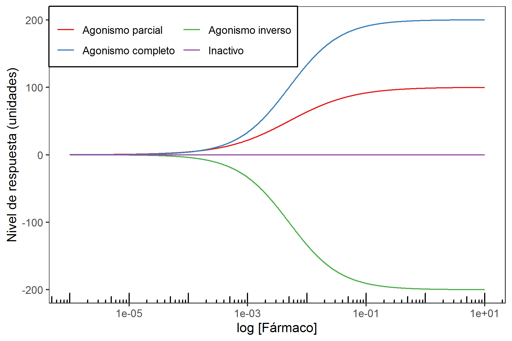
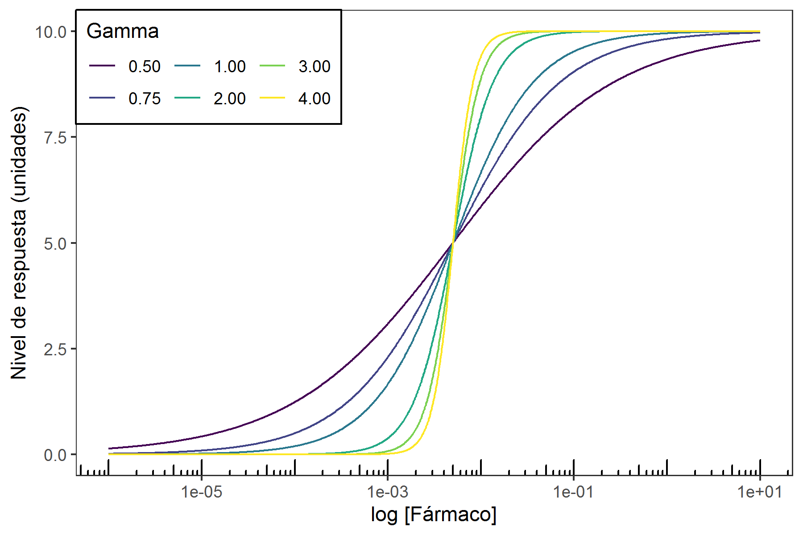
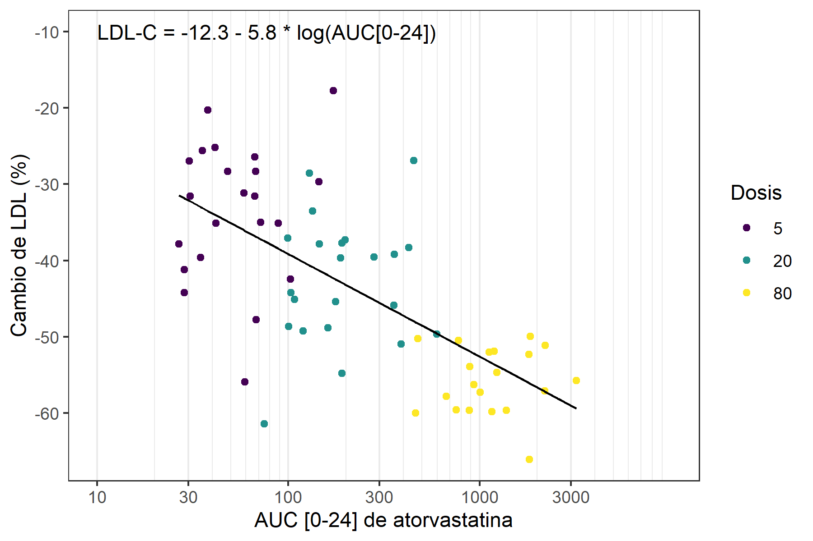
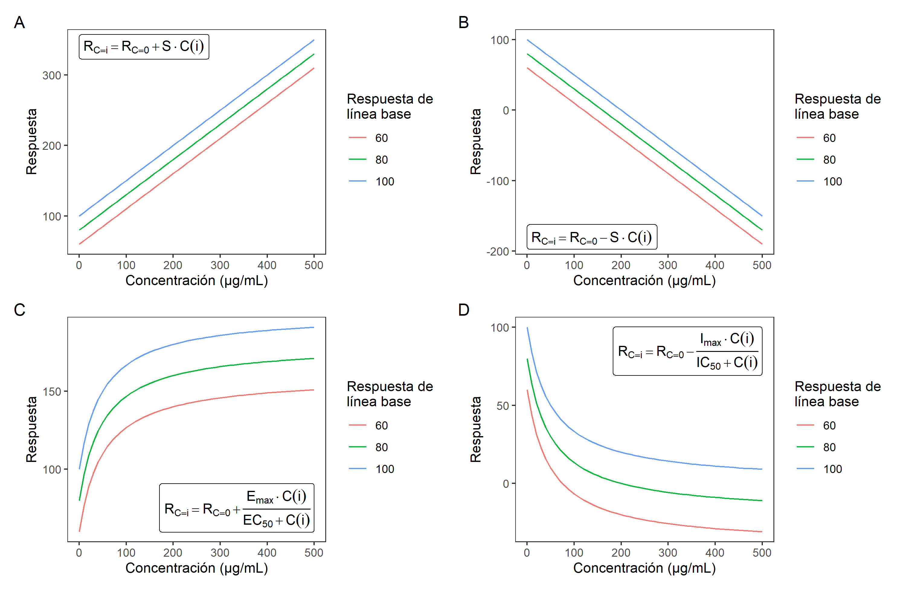
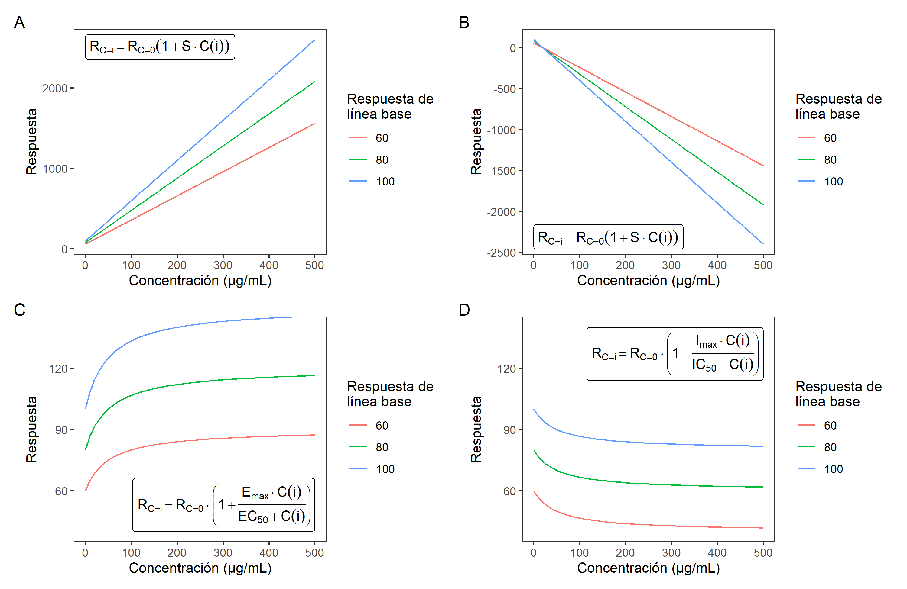

1. Introducción conceptos básicos
Un modelo es una representación de un sistema diseñada para proveer conocimiento o entendimiento del mismo (1). En la mayoría de los casos resultan en una simplificación de la naturaleza que provee una utilidad en el sentido de hacer predicciones o brindar explicaciones a fenómenos.
La farmacocinética (PK) es la ciencia el comportamiento de las concentraciones en la sangre u otros fluidos, tejidos o partes del organismo de un fármaco frente al tiempo. De esta manera se estudian procesos como absorción, distribución, metabolismo y excreción de fármacos, y otros compuestos xenobióticos. La farmacodinamia (PD) es el estudio de los efectos bioquímicos y fisiológicos de los fármacos en el organismo. Por tal, la PD se encarga de estudiar los mecanismos de acción terapéutica y toxicológica, así como la relación entre concentraciones en el sitio de acción farmacológica y la respuesta observada.
La integración de información PK con información PD ha permitido obtener modelos que permiten conocer el balance entre beneficios y riesgos de un tratamiento farmacológico. De manera que se puede derivar información sobre el manejo que se debe dar al tratamiento como su dosificación. En algunos casos también se puede entender la relación entre componentes de un sistema molecular, celular o fisiológico, y su influencia en la respuesta farmacológica. Un modelo PK-PD muestra el curso temporal de la acción farmacológica y las concentraciones de fármaco en el cuerpo.
1.1. Beneficios de la utilidad de modelos PK-PD
- Permite determinar régimenes de dosificación para alcanzar concentraciones en plasma con seguridad y eficacia óptima.
- Permite conocer el balance riesgo-beneficio de un fármaco en particular.
- Permite predecir la seguridad y eficacia que tendrá un fármaco en un ensayo clínico controlado desde un diseño de estudio.
- Permite entender la relación entre componentes de un sistema fisiológico y relacionarlo con la respuesta farmacológica.
1.2. Conceptos de farmacodinamia
- Exposición: se puede definir como:
- Cualquier dosis o ingreso del fármaco al cuerpo
- Medidas de concentración en plasma aguda o integrada en plasma o fluido biológico (\(\mathrm{C_{max}}\), \(\mathrm{C_{min}}\), \(\mathrm{C_{ss}}\), \(\mathrm{AUC}\))
- Respuesta (\(R\)): Se refiere a una medida directa de una observación farmacológica. Por ejemplo: presión sanguínea
diastólica.
$$R_t: \mathrm{Presi\acute{o}n~Arterial~Diast\acute{o}lica}$$
Donde, \(R_t\) es la respuesta a un tiempo \(t\).
- Efecto (\(E\)): Se refiere al cambio en \(R\) en un intervalo de tiempo. Es una cantidad calculada o derivada a partir de observaciones. Como ejemplo se tiene:
$$E: \mathrm{Cambio~de~l\acute{i}nea~base~de~presi\acute{o}n~diast\acute{o}lica~a~8~semanas}$$
Donde, \(E\) es el efecto. \(t\).
$$E = \Delta R = R_{t=8} - R_{t=0}$$En este ejemplo el efecto consiste en el cambio en 8 semanas de la presión diastólica calculado como la diferencia entre las dos respuestas.
Entre los tipos de efectos que se pueden determinar en estudios de farmacodinamia se encuentran:
- Biomarcadores. p.ej. un antígeno específico, una proteína, etc.
- Efectos mecanísticos. p.ej. inhibición de actividad convertidora de angiotensina.
- Desenlaces subrrogados. p.ej. cambio en línea base de presión arterial o lípidos.
- Desenlaces clínicos. p.ej. disminución de la mortalidad, disminución de complicaciones.
Interacción entre fármacos y receptores
Los receptores suelen ser proteínas que interactuan con ligandos endógenos para generar una respuesta fisiológica que permite regular la función celular. La interacción entre ligando y receptor sigue la ley de acción de masas de acuerdo al modelo de Clark. El nivel de respuesta farmacológica (\(R\)) en muchos casos depende de la concentración de un complejo entre el fármaco (ligando) y el receptor.
$$ \left[\text{Fármaco}\right] + \left[\text{Receptor}\right] \rightleftharpoons \left[\text{Complejo Fármaco-Receptor}\right] \rightarrow \text{Respuesta} $$
Modelo entre el ligando y la diana (macromolécula)
En este existe un ligando (\(L\)) que interacciona con una diana para formar un complejo entre la diana y ligado (\(LR\)). Este complejo se convierte en una forma activa (\(LR^{\ast}\)) que es responsable de la actividad.
$$ L + R \rightleftharpoons LR \rightleftharpoons LR^{\ast} $$
El modelo cuenta con una serie de supuestos:
- El ligando se une al receptor como una asociación biomolecular.
- La unión al receptor es completamente reversible.
- El modelo básico asume que sólo hay un tipo de sitio activo con uno por receptor.
- La ocupación de un ligando al sitio receptor no altera la afinidad de otras moléculas que se unan al receptor.
- Cada receptor tiene igual afinidad por cada molécula.
En la Figura 1 se muestra una comparación del comportamiento de la respuesta farmacológica respecto a la concentración del ligando de acuerdo con el tipo de agonismo.

Figura 1. Comparación de tipos de agonismo en ligandos con acción farmacológica.
2. Generalidades modelos PK-PD
Relación entre la dosis y el efecto farmacológico
Cuando el fármaco es administrado una o más moléculas del fármaco interactúan con el receptor ocasionando una respuesta farmacológica. El modelo de ocupación basado en la ley de acción de masas implica una unión del fármaco al receptor que es reversible
$$ \left[\text{F}\right] + \left[\text{R}\right] \underset{\mathrm{k_{off}}}{\overset{\mathrm{k_{on}}}{\rightleftharpoons}} \left[\text{FR}\right] $$
Donde, \(\left[\text{F}\right]\) es la concentración de fármaco, \(\left[\text{R}\right]\) es la concentración de receptor, \(\mathrm{k_{on}}\) es la constante de velocidad de asociación, \(\mathrm{k_{off}}\) es la constante de velocidad de disociación del complejo, y \(\left[\text{FR}\right]\) es la concentración del complejo fármaco-receptor
A partir de consideraciones de la ley de acción de masas se puede obtener la ecuación de Hill.
La tasa de cambio del complejo fármaco-receptor (\(\text{FR}\)) se puede describir por:
$$ \frac{d\left[\text{FR}\right]}{dt} = \mathrm{k_{on}} \left[\text{R}\right]\left[\text{F}\right] - \mathrm{k_{off}} \cdot \left[\text{FR}\right]$$
Donde \(\left[\text{F}\right]\) es la concentración del fármaco en el sitio de acción farmacológica, \(\left[\text{R}\right]\) es la concentración del receptor en el sitio de acción farmacológica, \(\mathrm{k_{on}}\) es la constante de velocidad de asociación de segundo orden y \(\mathrm{k_{off}}\) es la constante de velocidad de disociación de primer orden. Sí se denomina a la concentración total de receptores (\(\mathrm{R_{T}}\)) como la suma de \(\left[\text{R}\right]\) y \(\left[\text{F}\right]\), se puede obtener la siguiente expresión para la tasa de cambio del complejo como:
$$ \frac{d\left[\text{FR}\right]}{dt} = \mathrm{k_{on}}·(\mathrm{R_{T}} - \left[\text{FR}\right]) \cdot \left[\text{F}\right] - \mathrm{k_{off}} \cdot \left[\text{FR}\right]$$
Donde \(\mathrm{R_{T}}\) es la concentración total de receptores.
En condiciones de equilibrio donde no hay formación o disociación neta de complejos \( {d\left[\text{FR}\right]}/{dt} = 0 \), la ecuación se convierte en:
$$ \mathrm{k_{on}} \cdot (\mathrm{R_{T}} - \left[\text{FR}\right]) \cdot \left[\text{F}\right] = \mathrm{k_{off}} \cdot \left[\text{FR}\right]$$
Si se esta se organiza se tienen los siguientes resultados:
$$ \mathrm{k_{on}} \cdot \mathrm{R_{T}} \cdot \left[\text{F}\right] = \left[\text{FR}\right] \cdot (\mathrm{k_{off}} + \mathrm{k_{on}} \left[\text{F}\right]) $$
$$ \left[\text{FR}\right] = \frac{\mathrm{k_{on}} \cdot \mathrm{R_{T}} \cdot \left[\text{F}\right]}{\mathrm{k_{off}} + \mathrm{k_{on}} \left[\text{F}\right]} $$
$$ \left[\text{FR}\right] = \frac{ \mathrm{R_{T}} \cdot \left[\text{F}\right]}{\dfrac{\mathrm{k_{off}}}{\mathrm{k_{on}}} + \left[\text{F}\right]} = \frac{ \mathrm{R_{T}} \cdot \left[\text{F}\right]}{\mathrm{k_{D}} + \left[\text{F}\right]} $$
Donde \(\mathrm{k_{D}}\) es una constante de disociación de equilibrio (\( {\mathrm{k_{off}}}/{\mathrm{k_{on}}} \)).
Si se asume que:
- La magnitud del efecto (\(E\)) es proporcional a la concentración del complejo (\(E = \alpha \left[\text{FR}\right] \))
- La magnitud del efecto máximo (\(E_{\mathrm{max}}\)) es proporcional a la concentración total de receptores (\(E_{\mathrm{max}} = \alpha R_{T} \)).
Donde, \(\alpha\) se le conoce como eficacia.
El efecto (\(E\)) se puede describir en términos de la fracción máxima del efecto \(E_{\mathrm{max}}\) y la fracción de ocupación (\(f_{b}\)) por lo cual:
$$ f_b = \frac{E}{E_{\mathrm{max}}} = \frac{\left[\text{FR}\right]}{\mathrm{R_{T}}} $$
$$ \frac{E}{E_{\mathrm{max}}} = \dfrac{ \dfrac{ \mathrm{R_{T}}\left[\text{F}\right]}{\mathrm{k_{D}}+\left[\text{F}\right]}}{\mathrm{R_{T}}} $$
$$ E = \frac{E_{\mathrm{max}}\left[\text{F}\right]}{ \mathrm{k_{D}}+\left[\text{F}\right] } $$
Como \(\mathrm{k_{D}}\) tiene unidades de concentración, esta variable representa la concentración que permite alcanzar el 50% el efecto máximo.
De manera frecuente la ecuación de Hill, posee un parámetro adicional \(\gamma\) conocido como coeficiente de Hill, que se relaciona con la molecularidad de la interacción entre fármaco y receptor.
$$ E = \frac{E_{\mathrm{max}}\left[\text{F}\right]^\gamma}{ \mathrm{k_{D}}^\gamma +\left[\text{F}\right]^\gamma } $$
La ecuación de Hill describe la unión de un fármaco a su diana.
Ecuación de Hill con sigmoidicidad $$E = \frac{E_{\mathrm{max}} \times [F]^\gamma}{\mathrm{k_{D}}^\gamma + [F]^\gamma}$$
En donde:
- \(E\) es el efecto.
- \(E_{\mathrm{max}}\) es el efecto máximo que puede ser alcanzado.
- \([F]\) es la concentración del fármaco (ligando) libre.
- \(\gamma\) es el coeficiente de Hill o molecularidad.
- \(\mathrm{k_{D}}\) es la constante de disociación en equilibrio.

Figura 2. Efecto de gamma en la función de Hill.
3. Modelos Reversibles
Modelo de concentración-efecto lineal
En este modelo el efecto es dependiente de la concentración del fármaco de manera lineal. Se cumple en un rango de concentraciones limitado aproximando la ecuación de Hill cuando \(C \ll EC_{50}\). Este modelo se describe por:
$$ E = S \cdot C$$
En donde, \(E\) es el efecto, \(S\) es la pendiente, y \(C\) es la concentración del fármaco. Este modelo tiene poca utilidad en la extrapolación a dosis altas debido a que no predice la eventual saturación que presenta el receptor a concentraciones muy altas. Este modelo es ha sido utilizado en la evaluación del riesgo de arrítmias. En la Figura 3 se muestra un ejemplo del ajuste de este tipo de modelos.

Figura 3. Ejemplo de aplicación de modelo PD lineal. El eje Y se encuentra en escala logarítmica. Adaptado de Gopalakrishnan M, Kumar V, Issar M. Chapter 21. Relationship Between Pharmacokinetics and Pharmacodynamics. Shargel L, Yu A. (eds). Applied Biopharmaceutics and Pharmacokinetics, 7th ed. USA: McGraw-Hill Education; 2016. pp. 635-678.
Modelo de concentración-efecto log-lineal
Sí se considera un rango entre el 20 y el 80% de la respuesta farmacológica, la relación de Hill se puede aproximar mediante una ecuación log-lineal. Se tiene las siguientes relaciones:
$$ E = S \cdot \log{C} + E_{0} $$
Donde, \(E\) es el efecto, \(S\) es la pendiente, \(C\) es la concentración, y \(E_{0}\) es el efecto cuando la concentración es igual a 1.
$$\log{C} = \frac{E - E_{0}}{S} $$
Este modelo no puede predecir el efecto en el cero de concentración o la eficacia máxima. Se ha utilizado por ejemplo para describir (1) La actividad en la tasa de síntesis del complejo de protrombima vs concentraciones plasmáticas de warfarina y (2) concentración de propranolol y la reducción de taquicardia inducida por el ejercicio.
En la Figura 4, se tiene un ejemplo de esta relación entre el área bajo la curva entre 0 y 24 horas para varias dosis de atorvastatina y su efecto en la reducción de niveles de LDL.

Figura 4. Ejemplo de aplicación de modelo PD log-lineal. Adaptado de Stern RH, Yang BB, Hounslow NJ, MacMahon M, Abel RB, Olson SC. Pharmacodynamics and pharmacokinetic-pharmacodynamic relationships of atorvastatin, an HMG-CoA reductase inhibitor. The Journal of Clinical Pharmacology. 2000 Jun;40(6):616-23.
4. Modelos de Efectos de Fármaco Proporcionales y Aditivos
Modelo de efecto aditivo
Cuando un fármaco exhibe un efecto farmacológico aditivo, implica que la respuesta del fármaco es independiente de la línea base y aplica cuando existe una respuesta aunque la concentración del fármaco sea cero, lo que actúa como linea base.
$$ R = R_0 + E $$
Para un modelo lineal aditivo se vuelve:
$$ R = R_0 + S \cdot C $$
Para un modelo aditivo de saturación estimulatorio (con \(E_{max}\)) se vuelve:
$$ R = R_0 + \frac{E_{max} \cdot C}{EC_{50} + C} $$
Para un modelo aditivo de saturación inhibitorio (con \(I_{max}\)) se vuelve:
$$ R = R_0 - \frac{I_{max} \cdot C}{IC_{50} + C} $$
En la Figura 5 se muestra una comparación del comportamiento de la respuesta para diversos tipos de modelos aditivos.
Figura 5. Comportamiento de algunos modelos directos aditivos. A. Modelo lineal estimulatorio (\(S\) = 0.5), B. Modelo lineal inhibitorio (\(S\) = -0.5), C. Modelo con saturación estimulatorio (\(Emax\) = 100, \(EC50\)=50), D. Modelo con saturación inhibitorio (\(Imax\) = 100, \(IC50\)=50).
Modelo de efecto proporcional
El efecto se puede modelar de una forma proporcional al valor de la línea base. En tales casos se tiene la siguiente ecuación:$$ R = R_0 \cdot \left(1+E\right) $$
Para un modelo lineal proporcional se tiene:
$$ R = R_0 \cdot \left(1 + SC\right)$$
Para un modelo proporcional con saturación estimulatorio (con \(E_{max}\)) se vuelve:
$$ R = R_0 \cdot \left(1 + \frac{E_{max}\cdot C}{EC_{50} + C}\right) $$
Para un modelo proporcional con saturación inhibitorio (con \(I_{max}\)) se vuelve:
$$ R = R_0 \cdot \left(1 - \frac{I_{max}\cdot C}{IC_{50} + C}\right) $$
En la Figura 6 se muestra una comparación del comportamiento de la respuesta para diversos tipos de modelos proporcionales.
Figura 5. Comportamiento de algunos modelos directos proporcionales. A. Modelo lineal estimulatorio (\(S\) = 0.05), B. Modelo lineal inhibitorio (\(S\) = -0.05), C. Modelo con saturación estimulatorio (\(Emax\) = 0.5, \(EC50\)=50), D. Modelo con saturación inhibitorio (\(Imax\) = 20, \(IC50\)=50).